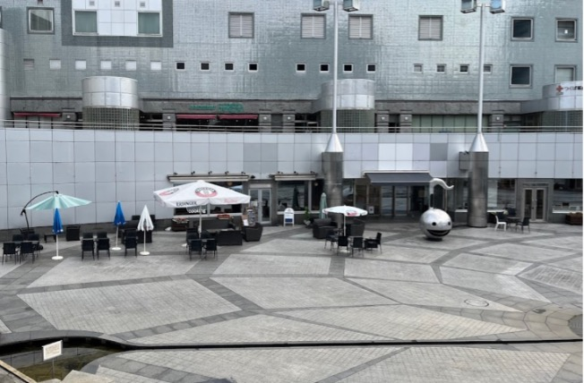
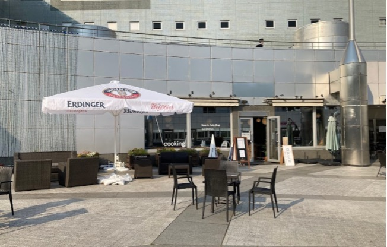
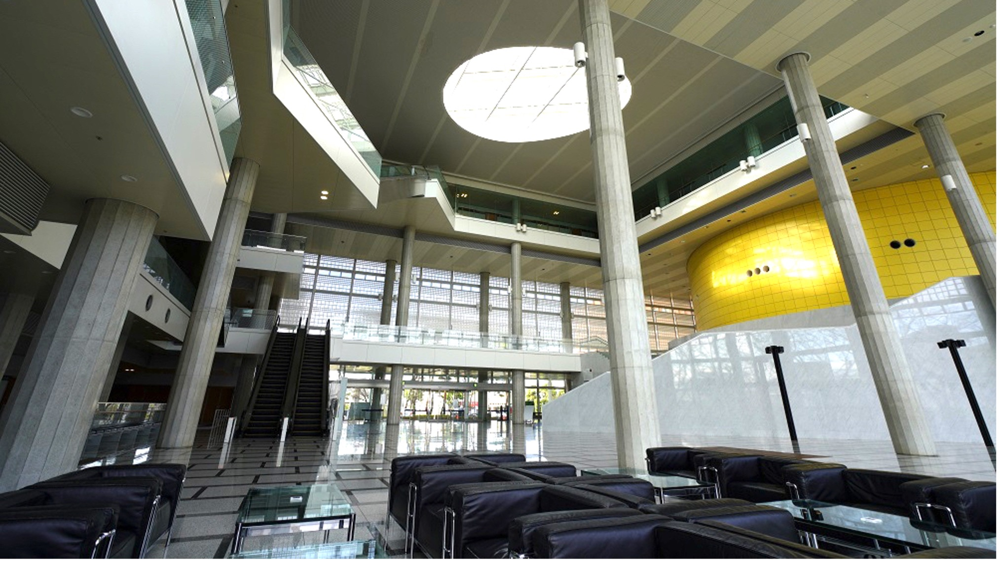
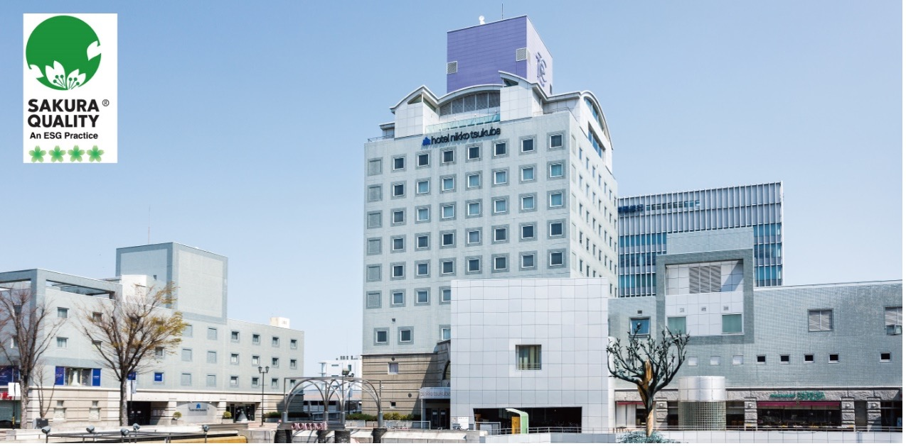
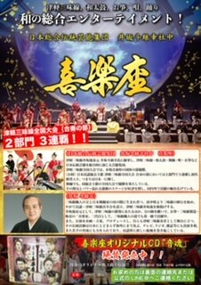
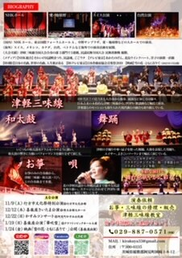
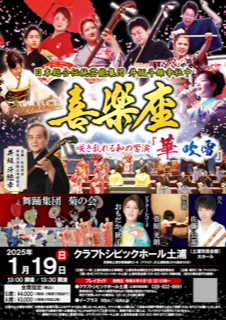

Social Events Venues
Workshop reception (October 28th)
Bar Engi (https://beercafe-engi.studio.site/)
Tsukuba Center Building 1F, 1-10-1 Azuma, Tsukuba, Ibaraki 3050031 Japan
ACCESS:
5 minutes’ walk from TX Tsukuba Station, right next to Tsukuba Center Square
10 minutes’ walk from conference venue


(picture from googlemap website)
Welcome reception (October 29th)
Epochal Tsukuba (conference venue https://www.epochal.or.jp/)
2-20-3 Takezono, Tsukuba, Ibaraki 3050032 Japan
ACCESS:
About 8 min on foot from Tsukuba center to Tsukuba International Congress Center

(picture from official website)
Banquet (October 30th)
Banquet at Hotel Nikko Tsukuba (https://www.nikko-tsukuba.com/)
with a Japanese traditional cultural exhibition
1-1364-1 Azuma, Tsukuba, Ibaraki 3050031 Japan
ACCESS:
a two-minute walk from Tsukuba station
a 10 minutes’ walk from conference venue

(picture from official website)
Introduction to the Pieces Performed by Kirakuza at the Banquet
Aranami (Raging Waves)
An original piece centered around traditional Japanese taiko drums.Kaze no Uta (Song of the Wind)
A national competition-winning piece.
An original composition featuring Tsugaru shamisen.Yosakoi Soran
A modern version of the traditional Soran Bushi.
The audience joined in with the chant "Dokkoisho, Soran."


